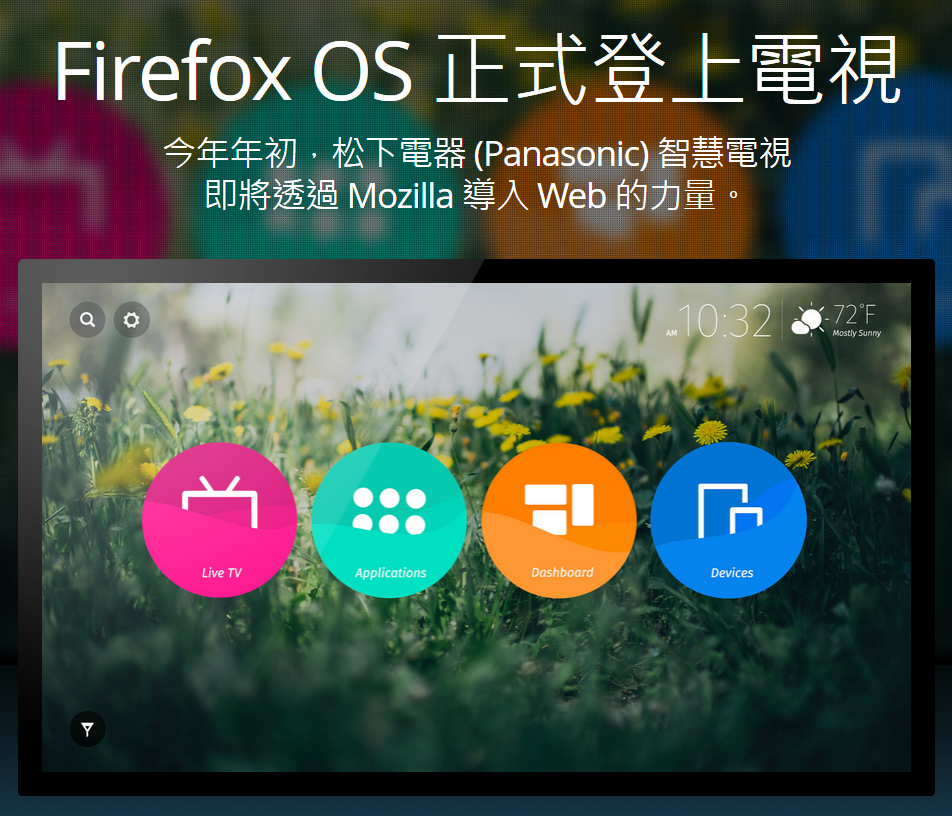

松下電器 (Panasonic) 於 CES 發表首款搭載 Firefox OS 的 4K Life+Screen 智慧電視
以推動網路、平等、開放為宗旨的 Mozilla，在今日展開的 2015 消費性電子展 (Consumer Electronics Show；CES) 展現 Firefox OS 最新成果。作為 Mozilla 合作夥伴之一的松下電器 (Panasonic)，在此次展覽中發表其首款搭載 Firefox OS 的 4K 超高解析度 Life+Screen 智慧電視，充份顯示 Firefox OS 以 Web 為平台的力量與靈活性，並能串連各種裝置與不同使用經驗的強大優勢。
Firefox OS 為多樣裝置帶來強大功能
今年 CES 甫開展，身為 Firefox OS 合作夥伴的松下電器 (Panasonic) 即發表其 2015 年新一代 Life+Screen 智慧電視，達到 4K 的超高解析度畫質。
Mozilla 與 Panasonic 合作，以 Firefox OS 打造創新、互動、可自訂的使用者介面，並將於今年春季現身於 Panasonic 新款 Life+Screen 智慧電視上。透過此次合作，Panasonic 在 2015 年的電視使用者介面將大幅躍進，讓使用者更能輕鬆取得自己最愛的內容，包含網站、電視節目、應用程式，以及其他裝置上的內容。這同時也是 Panasonic 的智慧電視首次搭載 Firefox OS，代表電視螢幕將顯示應用程式所推播的通知，而未來更將擴及各種相容連線裝置的推播通知。
Panasonic 集團家庭娛樂事業部總監 Yuki Kusumi 指出：「 Life+Screen 的 4K 超高解析度智慧電視導入 Firefox OS 之後，我們發現消費者能更輕鬆找到自己最愛的內容與程式，並可自訂最合適的使用者介面。Firefox OS 使用 Open Web 技術，讓我們的產品達到最佳相容性，使智慧型手機與筆記型電腦等其他裝置也能傳送內容 (如相片或影片) 到電視上。」
Mozilla 技術長 Andreas Gal 表示：「從智慧型手機到如電視與串流裝置的新款產品，Firefox OS 都能夠提供 Web 作為平台所展現的強大功能與靈活性。Mozilla 很高興能與 Panasonic 合作提供首款 Firefox OS 智慧電視，讓開發者與消費者都能輕鬆自訂本身喜愛的方式，橫跨所有裝置享受自己 Firefox 的網路經驗。」
Web 即是平台
Firefox OS 釋放了以 Web 為平台的力量，並串連了多款裝置與不同使用經驗。Mozilla 很高興能打造新一代的「物聯網 (Web of Things；WoT)」，並以 Open Web 技術連接所有類型的裝置，讓開發者與硬體製造商得以打造多樣的新產品以及應用程式，使消費者可橫跨連線裝置相互使用。
舉例來說，Matchstick (甫發表世界首款搭載 Firefox OS 的開放軟硬體串流電視裝置) 即於今天宣佈新的合作關係，將與飛利浦 (Philips)＼艾德蒙 (AOC) 以及 TCL 打造更多 Firefox OS 裝置。
透過 Panasonic 智慧電視、Matchstick 串流電視裝置，以及其他 Firefox OS 裝置，消費者將能享受自訂的連網經驗，橫跨不同類型的裝置 (電腦、平板電腦、智慧型手機、大螢幕電視) 而取得自己喜愛的內容 (網站、影片、照片、應用程式)，不再受限於單一品牌或專利生態系統。
目前最新、最強功能的 Firefox OS 智慧型手機
Firefox OS 持續拓展版圖，期能透過更多裝置現身遍佈於更多國家。由 KDDI 甫發表的「Fx0」已於全日本境內 au 商店販售。Fx0 為首款高規格 Firefox OS 智慧型手機，其內搭載最新版的 Firefox OS，且使該款手機完整體現 Mozilla 使命與 Firefox OS 核心價值的開放、自由、透明等概念。
新版 Firefox OS 另支援了 NFC、LTE、WebRTC 等創新技術，亦讓 Fx0 成為首次納入相關技術的 Firefox OS 手機。
這些發展已充份說明了 Firefox OS 的強勁動能，目前已有共 16 款手機於全球近 30 個國家上巿。

更多 Life+ Screen TV 搭載 Firefox OS 圖片欣賞
原文連結：Mozilla and KDDI Launch First Firefox OS Smartphone in Japan